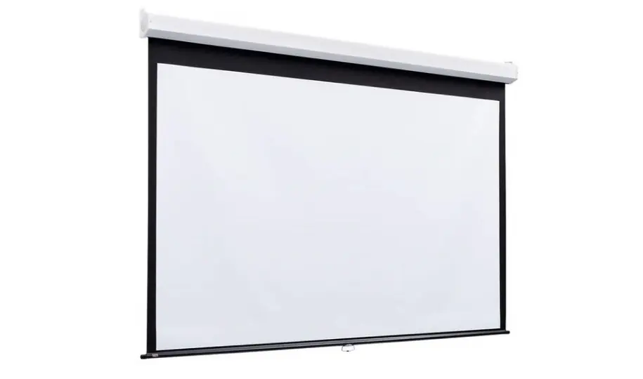

Серии для образовательных учреждений
Draper предлагает доступные проекционные экраны для небольших помещений: классных комнат, аудиторий, переговорных комнат и конференц-комнат. Особенность решений – сравнительно высокое качество изображения при невысокой стоимости. Экраны бюджетных серий Luma или Access оснащаются надежным механизмом опускания и сворачивания экрана, гарантирующим 5 лет безупречной работы, с функциями плавного сворачивания для предотвращения разрывов полотна. Для помещений без возможности полного затемнения Draper предлагает бюджетный вариант с ALR-полотном – серия Silhouette.